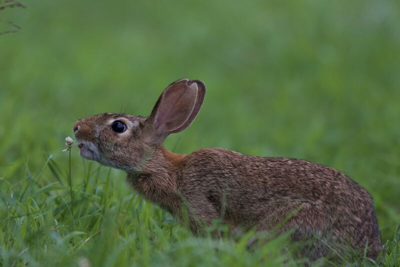

袋鼠是撑着走，还是弹起来？
慢走时前爪和粗尾巴撑地，后腿往前挪——不是口号里的「第三条腿」那么简单。快跳时后腿长腱像皮筋：落地被拉长把力存住，再弹回去，下一跳就省一点，中间不必重新蹲完。育儿袋是带孩子的口袋，不是弹跳发动机。红袋鼠在中等速度时，代谢不怎么跟着再加快而猛涨——这是有人量过的现象，不是所有袋鼠所有速度的定律，本页也不写时速。兔子也会跳，可是不能一路弹很远，不是说它完全没有腱。园内远观，不投喂、不追逐、不拍玻璃。比较分数只用来比「落地回弹」，不是公路成绩册。
袋鼠玩具台
点大按钮，看它撑着挪，还是一下子弹起来。


嘿咻，前爪和尾巴撑着地，慢慢挪。再点「连续弹」看它飞起来。
先看舞台怎么变，再到底下图鉴点两张卡来比。
慢走时前爪和尾巴撑地，弹起来时腱先压再还
先点「慢走撑地」：前爪和粗尾巴撑在沙上，后腿往前挪。这是一套慢慢挪的办法，不是口号里的「第三条腿」就能讲完——漏掉前爪，账就不对。再点「落地」和「连续弹」：脚一着地，后腿里的长腱被拉长，像压扁的弹簧把力存住；腱还没松完，下一跳就接着送出去，中间不必重新蹲完。
育儿袋是带孩子的口袋，不是弹跳发动机。袋子鼓着，跳得远不远仍是后腿腱的事，两件要分开说。代谢「不太随速度猛涨」只对红袋鼠、中等速度、有人量过的情况成立，不是所有袋鼠所有速度都不费力，本页也不写时速。兔子也会跳，可是不能一路弹很远——不是说它完全没有腱，是存不住那么远。
因为追赶会逼它改步态、投喂会改食谱、拍玻璃是噪声，所以园内远观，不投喂、不追逐、不拍玻璃。台上「谁更像」的分数只比较落地回弹，不是公路时速，更不是饲养课。
点一张贴纸卡，舞台就演戏
袋鼠、兔子、马、袋子里的宝宝，点哪张演哪幕。
下面有 16 张卡。点两张不一样的，再说谁更像袋鼠这种「落地压紧、再弹起来」的兽。每次重新蹲不是袋鼠跳远的省力办法。自己会飞是人编的。
还没选。先点一张，再点另一张，比谁更像袋鼠。
猜一猜
袋鼠慢走时前爪和尾巴撑地，跳起来却像弹起来——主要靠什么省劲？
先押一个，再点「看答案」。
任务：比谁更像袋鼠
点两张不同的图鉴，再说出谁更像袋鼠这种落地压紧腱、再弹起来的兽。自己会飞不是袋鼠，请换袋鼠、长腱或再弹起来来比。
开放式提示不会代替上面的正式任务。
尚未完成：先点两张卡，再说谁更像袋鼠。
撑着走是一套，弹起来是另一套
同一只袋鼠，先只改步态这一项。点「慢走撑地」：前爪和粗尾巴在不在地上，后腿有没有往前挪。再点「连续弹」：身体有没有飞起来，落地时后腿有没有被压扁。这样比，才知道慢走和弹跳是两套办法，不是同一种「跳着走」。
完成句写「前爪和尾巴撑地」或「落地再弹」，不要把「第三条腿」当成全部解释。育儿袋里是宝宝，不是发动机。兔子也会跳，可是不能一路弹很远，不要写成「完全没有腱」。园里不喂、不追、不拍玻璃。

慢走时前爪和大尾巴撑地，后腿往前挪，不是一路弹着走，也不是第三条腿神话。
脚一落地，后腿里的长腱被拉长，像压扁的弹簧把力存住，下一跳再用。
腱还没松完，下一跳就接着送出去，中间不必重新蹲完，所以省一点力。
育儿袋是带孩子的口袋，不是让它跳得更远的发动机。跳靠后腿腱，袋里继续发育。
兔子也会跳，可是不能一路弹很远。不是没有腱，是存不住那么远，袋鼠腱能连弹。
不要喂、不要追，也不要拍玻璃逗它。台上分数不是公路时速，幼仔还没长完。
- 点慢走撑地。前爪和尾巴在哪。
- 点落地。后腿是不是被压扁。
- 点连续弹。中间还要不要蹲完。
- 否决袋当发动机。袋子里是宝宝。
慢慢走的时候，前爪和尾巴撑着地。跳起来，是后腿像弹簧一样弹回去。袋子里是宝宝。我们不追、不喂。
慢走靠前爪和粗尾巴撑地，后腿往前挪。弹跳靠后腿长腱落地存力、再送出去，中间不必重新蹲完。育儿袋跟推进无关。兔子不能一路弹很远。本页分数是比较尺子，不写时速。
红袋鼠在中等速度下，代谢随速度上升很平，是有人量过的现象，不是全物种、全速度定律。腱与肌串联是储能单元。园内干扰会逼它改步态、烧掉预算。
这在教什么：孩子应能分开撑走和弹跳，并否定「育儿袋让它跳」「第三条腿讲完了」和「所有袋鼠任何速度都不费力」。完成看的是两套步态对照，不是背时速。
- 慢走时前爪在哪？粗尾巴在干什么？只说「第三条腿」漏掉了什么？
- 落地以后，下一跳为什么不必重新蹲完？力先存在哪？
- 袋子鼓着的时候，跳得更远吗？还是两件事？
- 兔子能一路弹很远吗？能说它完全没有腱吗？
尺子不是时速，以及兔子那句不要说绝
本页「谁更像」的分数只用来比较落地回弹：谁更像「压紧再弹」，不是给动物打分，更不写公里每小时。红袋鼠在中等速度时，代谢不怎么跟着再加快而猛涨——这是有人量过的现象，加上「红袋鼠、中等速度、有人量过」三个限定才站得住，写成「所有袋鼠怎么跳都不累」就错了。
兔子有自己的后腿腱，只是不能像红袋鼠那样一路弹很远。写成「完全没有腱」是错的；该落在「不能一路远弹」。沙袋鼠是近亲，也会弹着走，个子小、腱没那么长。袋熊也有袋子，四条短腿走，不一路弹。
育儿袋开口向前，幼仔在里面喝奶、发育。它解决的是繁殖，不是力学。袋子鼓着，不会给妈妈加一台发动机。
拍玻璃和投喂会让它从弹跳稳态里出来，追赶还会烧掉本来省下的那一点力。远观即可，不喂、不追、不拍。
台上的分数只用来比较跳得省不省力，是本页比较尺子，不是公路时速。
兔子跳几下就要重新蹲。不是没有腱，是腱存不住那么远的一串回弹。
袋子管带宝宝，跳得远不远是后腿腱的事。两件分开说，不要写成发动机。
隔着玻璃也不要拍打，更不要喂食或追着跑。园里远远看就够，不要逗袋口。
对照：腱弹跳 · 尾撑慢走 · 育儿袋
三列里前两列是两种步态，第三列是带孩子，不要并成「都是袋鼠所以一样」。甲：落地把腱拉长，再弹起来把存住的力送出去，连续弹时中间少蹲。乙：慢慢挪的时候靠前爪和粗尾巴撑地，后腿往前挪——慢，但省得一直弹。丙：小袋鼠待在袋子里，袋子不会给妈妈加一台发动机。否决句：「第三条腿讲完了」和「袋子让它跳」。
兔子对照：能跳，却不能一路弹很远。本页尺子只比省力，不写它一小时能跑多远。园里远远看着就好，不喂、不追、不拍玻璃。
落地把腱拉长，再弹起来时把存住的力送出去。中间不必重新蹲完，力存在腱里。
慢慢挪的时候靠爪和尾巴撑，看起来完全不像在弹跳。两套步态不要糊。
小袋鼠待在袋子里，袋子不会给妈妈加一台发动机。跳还是靠腱，不是装零食袋。
兔子对照：能跳，却不能像袋鼠那样一路弹很远。差在腱能不能连着回弹。
这一页的尺子只比省力，不写它一小时能跑多远。不要编假精确时速。
远远看着就好，不喂、不追、不拍玻璃。本页不是骑乘或投喂课，本页只讲腱和袋。
两套步态，一个袋子
在纸上画两幅：一幅前爪和粗尾巴撑地、后腿往前挪，写「慢走撑地」；一幅落地压扁再弹出去，写「腱先存再还」。旁边画一个口袋，写「袋子=宝宝」。两套步态不要写成一种。
口头只要两句：「慢走是前爪和尾巴撑着挪。」「跳起来是后腿像弹簧弹回去。」有人说「第三条腿」，让孩子补上「和前爪一起」；有人说「袋子让它跳」，让孩子指着口袋里的宝宝反驳。代谢那句必须加上红袋鼠、中等速度、有人量过，不要写成「怎么跳都不累」。
园里停远，不喂、不追、不拍玻璃。回弹怎么工作，可以再到回弹工坊对照。本页分数不要抄进田径成绩册。
慢走是撑着挪，快跑是弹着走，两套步态不要写成一种「一直在跳」，撑和弹要分开。
袋子只装宝宝，不负责把下一跳送得更远。发动机那句整列划掉，袋不给下一跳加油。
红袋鼠在中等速度时最省力，不是越跳越不费力，更不是所有种的定律。
参观时离远一点，不要拍玻璃，也不要把食物递过去。扔食会改找人习惯。
怎样才算公平的一次比较
想知道「省力靠的是落地回弹还是每次重新蹲」，就只改步态这一项。同一只袋鼠、同一对后腿，先慢走看爪和尾撑不撑地，再连续弹看中间还要不要蹲完。把「袋子让它跳」叠进同一档，分不清到底是力学还是繁殖。
- 只改这一项：慢走撑地还是连续弹（或只比落地压紧和每次重蹲）。
- 先保持不变：同一只袋鼠、同一对后腿、同一个袋子。
- 要观察的：前爪和尾巴在不在地上；落地后下一跳还要不要重新蹲完。
- 另开一行：兔子能不能一路远弹、代谢那三个限定、园规红线，各记各的。
还可以问下去
- 只说「第三条腿」，漏掉了慢走时的哪两只前爪？补上「和前爪一起」以后，还像不像口号？
- 连续弹中间少蹲，能量从哪来？孩子若说「它更有劲」，怎样改口成腱被拉长再还？
- 把代谢句写成「所有袋鼠怎么跳都不累」，错在哪三个限定？本页分数能抄到田径成绩册吗？
按年龄分层的讲法
同一个现象，三个年龄段讲到哪一层。建议只讲孩子当前那一层，讲完就停，不要把代谢曲线提前塞进四岁耳朵。
慢慢走的时候，前爪和尾巴撑着地。跳起来，是后腿像弹簧一样弹回去。袋子里是宝宝。我们不追、不喂。
慢走靠前爪和粗尾巴撑地。弹跳靠后腿长腱落地存力、再送出去。育儿袋跟推进无关。兔子不能一路弹很远，不是没有腱。本页分数只用来比较，不写时速。
红袋鼠在中等速度下，代谢随速度上升很平，是有人量过的现象，不是全物种定律。腱与肌串联是储能单元。园内干扰会逼它改步态。比较分数是教学尺子，不是公路时速。
给家长的问题
- 只说「第三条腿」，漏掉了慢走时的哪两只前爪？
- 连续弹中间少蹲，能量从哪来？孩子若说「它更有劲」，怎样改口成腱？
- 育儿袋鼓着的时候，跳得更高吗？还是两件事？
- 把代谢句写成「所有袋鼠怎么跳都不累」，错在哪三个限定？
- 本页分数能抄到田径成绩册吗？
背后的原理
慢走时前肢与尾形成支撑三角，后肢前移。高速弹跳则由后肢肌腱单元拉伸—释放，使步态在一定速度区间代谢成本较平。该现象有物种和速度范围，不能写成全袋鼠定律。
育儿袋是繁殖结构。推进来自后肢与尾的力学，不来自口袋。
兔形目也有后肢弹性成分，但持续弹跳迁徙的能力与红袋鼠不同。否定句应落在「不能一路远弹」，而不是「没有腱」。
比较分数和舞台刻度是教学尺子。园内投喂、追逐和敲玻璃提高应激并改变步态，观察用距离。
袋鼠公式卡 · 腱储能≈落地压紧×回弹（本页比较尺子）
跟腱与肌肉串联：着地拉伸贮弹性势能，蹬伸释放；尾巴参与平衡与慢行支撑。育儿袋带幼仔，不是弹跳发动机。园内远观勿投喂。
接下来可以去
同一条线索还可以在隔壁站继续看。